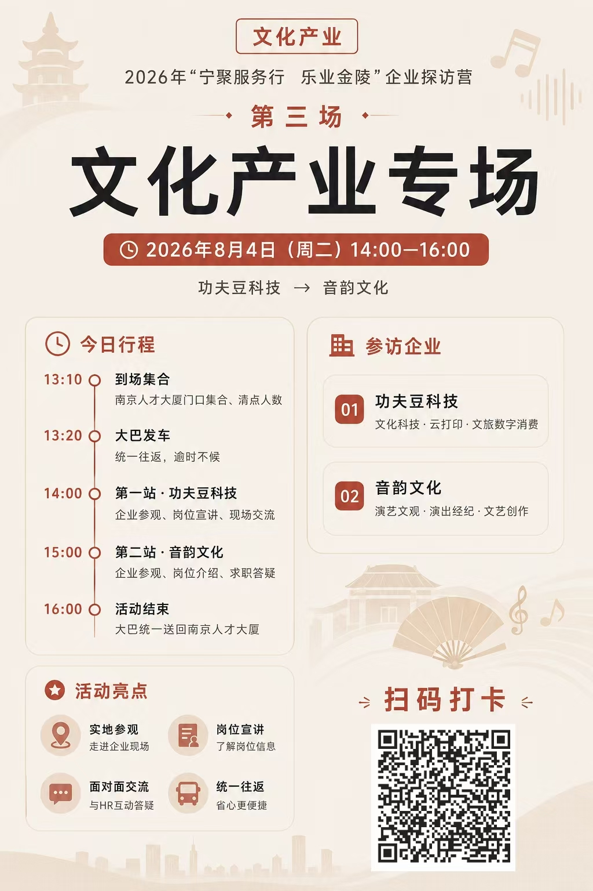

再生塑料自浇水花盆产品与配套服务
配套小程序
配套小程序
签到、收图、活动反馈，原本分散在不同环节。我面向老师的组织需求，独立完成活动海报、扫码入口、参与者页面与组织端后台。


04 / 路见 · AI 无障碍出行
早期方案获 2026「工科女生未来赋能计划」全国总决赛第一名
从出行者到家属，再到治理端，试着把出行中的信息接起来。
EYES SEE
学习和远程实习时，我想记录时间，又不想反复打开表格。于是做了一个桌面常驻的任务计时工具，用记录支持复盘。
桌面常驻计时，记录保存在本机。
财务藏着税务欠款，技术知道系统随时会崩，CEO 有自己的离场条件。你将扮演一位合伙人，在十轮危机中分配预算、争取签字，决定保住公司还是保住自己。
每个人都有秘密。
每次签字都有代价。
持续创作公众号与小红书内容，并获得驾考宝典品牌合作机会，参与需求沟通、内容方案确认、制作发布与后续反馈。
公众号累计内容
公众号单篇最高阅读
小红书单篇最高浏览
英语长期班累计营收贡献
累计转化 180 名付费学员
围绕用户年级、基础、投入度和目标进行分层，按状态调整沟通重点与跟进节奏，处理价格、竞品、退款等不同异议。
把专业调研、用户反馈提炼、案例匹配和回信辅助整理为可复用场景，方法同步至 60+ 人团队。
围绕大模型真实用户问答质量，负责复杂样本评估、典型问题归纳和系统使用反馈，在统一规则下持续输出可复核判断。
依据逻辑一致性、内容合理性和格式规范识别前后矛盾及不合常理问题，归纳典型 Bad Case，提交结构化反馈，积累对模型能力边界与易错类型的认识。
负责约 4000 元英语长期班的潜在用户筛选、商务沟通、关系维护与成交推进，累计转化 180 名付费学员、贡献 70 万元+营收。
按年级、基础、投入度和目标判断意向，调整跟进节奏，单轮成交由 2 单提升至 9 单；处理价格、竞品及退款等异议，盘活历史用户，推动单轮业绩团队第一。
创建 8 个垂直场景 AI 智能体，相关方法同步至 60+ 人团队并纳入新人培训。
参与大学生线上活动招募、用户承接、现场互动及转化跟进，共创 8 场单场 250+ 人线上活动。
通过私域渠道完成邀约、入群与活动提醒，担任活动教练，负责现场互动、公开表达及过程陪伴，并跟进参与情况与用户反馈。
ABOUT / 关于我
我是毛雨晴，2027 届自动化技术与应用本科生。我习惯从真实问题出发，把零散需求推进为可以演示、可以验证的项目。
我做过用户沟通、方案设计、团队协作、AI 辅助开发，也在现场反馈里修改过自己的判断。对我来说，做出来之后愿意继续改，是同样重要的一步。
自动化技术与应用专业（本科） · 2023.09—2027.06
CET-4 577 / CET-6 · 全国计算机二级（MS Office）
连续两年获得学业奖学金
通过 AI 协作开发好时光，做出桌面悬浮计时卡片，并发布 Mac 和 Windows 安装包。
在碰见项目中搭建后端，处理用户登录和数据存储，并设置数据访问权限。
整理用户触达和课程转化记录，复盘不同话术的反馈，并把跟进方法整理给团队使用。
LET’S TALK / 联系我